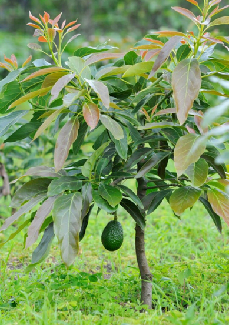
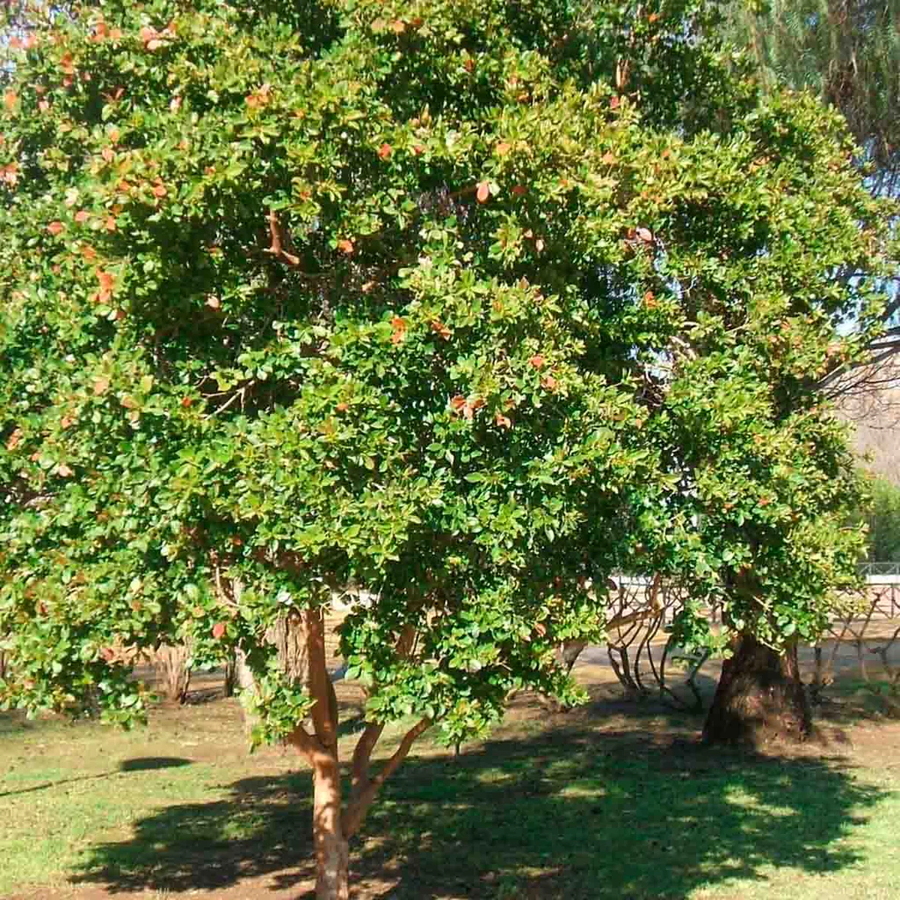
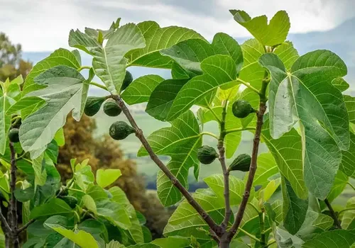
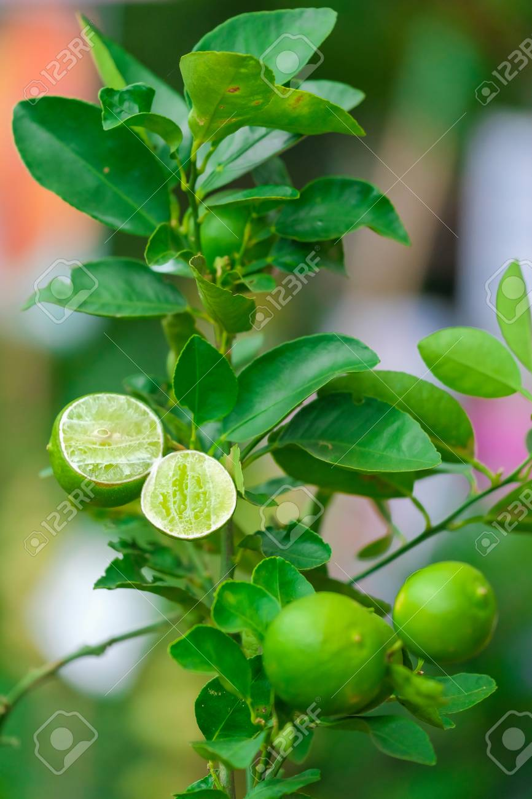
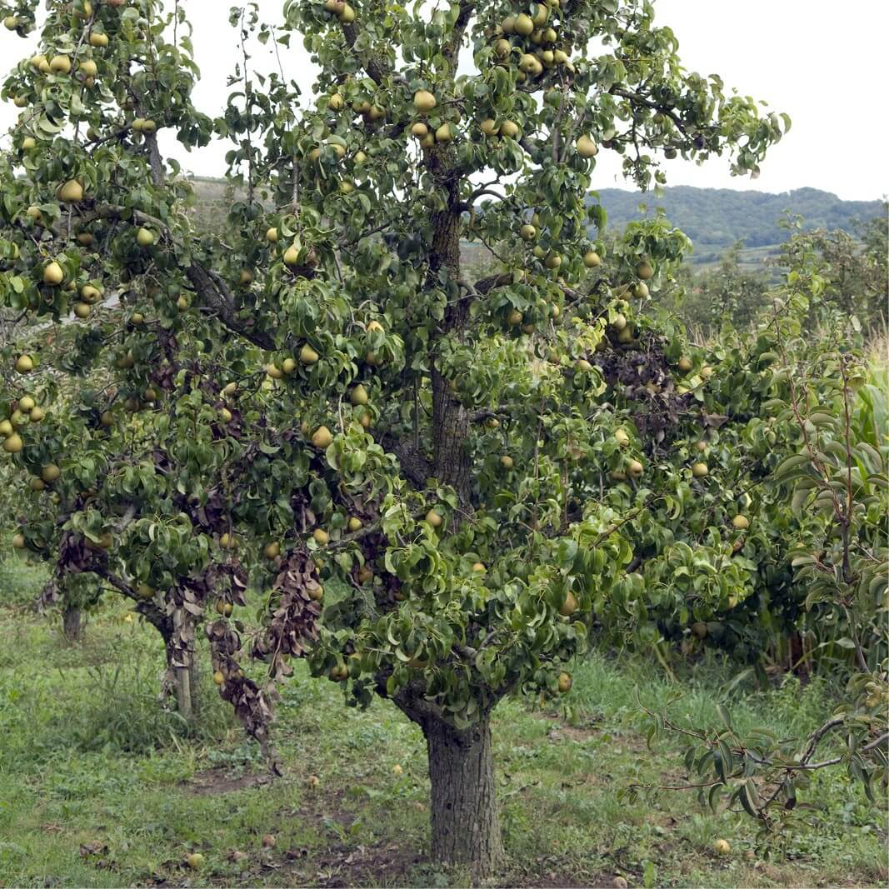

Bienvenidos a El patio de mi casa.
Esta es mi bitácora con la información de algunos árboles y plantas que tengo.
Aguacate
Es un árbol de hoja perenne originario de Mesoamérica. Es muy apreciado por sus frutos cremosos, ricos en grasas saludables y potasio. Necesita suelos con buen drenaje y mucha luz solar.

Persea americana
Guayaba
Un árbol frutal tropical muy común en los hogares. Sus frutos son extremadamente aromáticos y son una de las mayores fuentes naturales de vitamina C. Es un árbol resistente que tolera bien diferentes tipos de suelo.

Psidium guajava
Higo
La higuera es un árbol pequeño o arbusto robusto muy valorado desde la antigüedad. Sus frutos son dulces y pueden consumirse frescos o secos. Es una planta que prefiere climas templados y no requiere riegos excesivos.

Ficus carica
Lima
Este cítrico es fundamental en cualquier huerto casero. Produce frutos verdes, pequeños y muy ácidos, ideales para la cocina y repostería. Como todos los cítricos, necesita abono regular y protección contra las heladas fuertes.

Citrus × aurantiifolia
Pera
El peral es un árbol de clima templado que destaca por su hermosa floración blanca en primavera. Sus frutos son carnosos, dulces y refrescantes. Requiere de una poda anual para mantener su forma y asegurar una buena cosecha.

Pyrus communis